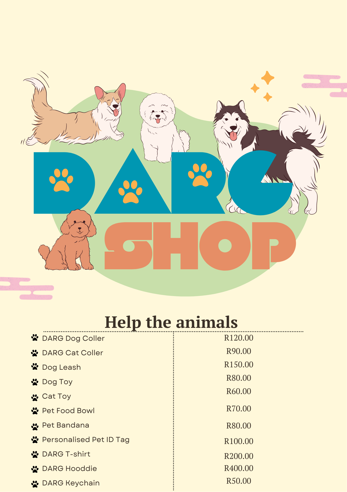

Welcome to the DARG Shop
Discover the DARG shop and support our mission to rescue, care for and protect animals in need.
Explore Our ShopShop for a Cause.
Supporting the DARG shop is another way to contribute to animal welfare in Hout Bay.
Explore DARG merchandise and learn how your support can help make a difference in the lives of rescued animals.
Discover the DARG Shop
Take a look at our shop and contact DARG to enquire about merchandise and availability.

Every Purchase Has a Purpose
The DARG shop gives supporters an opportunity to show their love for animals while contributing to the organisation's rescue mission.
Interested in visiting the shop or learning more about available merchandise?
Enquire About the ShopWhy Support the DARG Shop?
Every act of kindness can help support animals who need care and protection.
Support Rescue Work
Help support the mission of rescuing and caring for animals in need.
Show Your Support
Discover merchandise connected to a cause that matters.
Make a Difference
Support efforts to give rescued dogs and cats a better future.
We'd Love to Hear From You.
Want to learn more about the DARG shop? Get in touch or find out where we are located in Hout Bay.
Visit Our Coffee Shop
Explore another part of the DARG experience by visiting our coffee shop page.
Explore the Coffee Shop